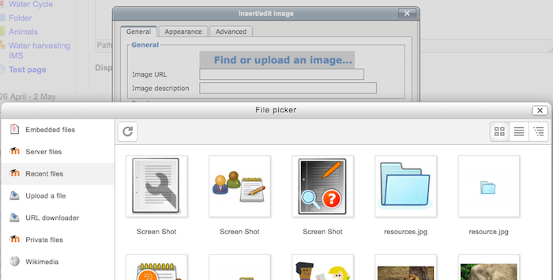
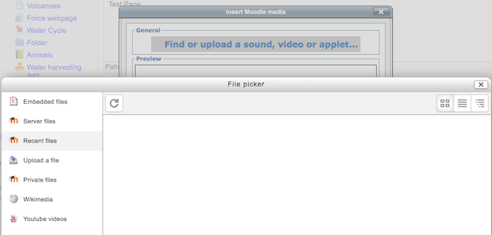

The recent files repository allows users quickly to locate files they uploaded previously.
- Recent files can be accessed anywhere the file picker is available.
- Recent files are context-sensitive -that is to say - you will only see the type of file Moodle thinks you want to upload.
Example 1: A user clicks the image icon in the text (TinyMCE) editor to upload an image already used in a different course. The Recent files repository will only show image files even though the user might have uploaded files of other types previously.
Example 2: A user clicks the Moodle media icon to upload a sound file already used in a different course. The Recent files repository will only show media files even though the user might have uploaded files of other types previously.
When a recently uploaded file is re-used elsewhere in Moodle, the teacher has the option to make a copy (a new, unconnected version) or to create a shortcut or alias.
- There is no set time for the display of Recent files - that is to say - it isn’t the last two days or two weeks etc.
- Recent files are by default the last 50 files the user has uploaded to Moodle. This number can be changed by the admin
- Go to Settings > Site Administration > Plugins > Repositories > Recent Files
- Click the blue Settings link
- Change the number to your preferred number.
Recent files is enabled by default but can be disabled by the administrator if required.
- Go to Settings > Site Administration > Plugins > Repositories > Manage Repositories
- Change the drop down next to Recent files from “Enabled and Visible” to “Disabled”
There is just one capability, View recent files, which is allowed for the default authenticated user role.